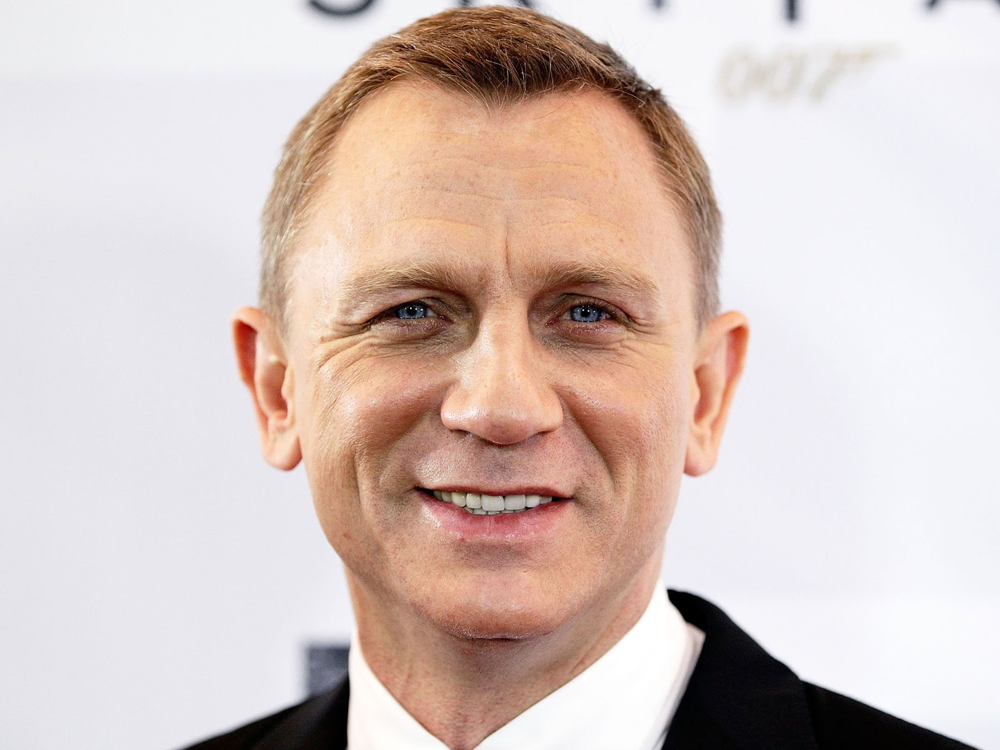
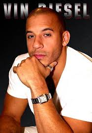

Jennifer Shrader Lawrence nasceu no dia 15 de Agosto de 1990 em Louisville, Kentucky. Sua mãe, Karen, administrava um acampamento infantil. E seu pai, Gary, foi proprietário de uma firma de construções. Quando era menor, Jennifer atuava em peças da igreja e por volta dos 14 anos decidiu que atuar é o que realmente queria fazer da vida e convenceu seus pais a se mudarem para Nova York para encontrar uma agência de talentos. Ela se formou no colégio dois anos mais cedo por causa da carreira.
2008 foi o ano que ela fez seus primeiros filmes. Além de integrar o elenco de Garden Party e protagonizar The Poker House, onde trabalhou ao lado de Selma Blair e Bokeem Woodbine, ela fez o filme The Burning Plain de Guillermo Arriaga, com a atriz Charlize Theron. Sua atuação no filme lhe rendeu um Prêmio Marcello Mastroianni de Melhor Atriz Jovem Emergente, durante o Festival de Cinema em Veneza no mesmo ano.
Ela fez parte do elenco da comédia escrita e criada por Bill Engvall e Michael Leeson, The Bill Engvall Show, interpretando Lauren Pearson. Infelizmente a série foi cancelada em 2009 após 3 temporadas. Depois disso, Jennifer continuou trabalhando em outros filmes e participou de Devil You Know, Garden Party e The Poker House, trabalhando ao lado de Selma Blair e Bokeem Woodbine. Seus projetos em séries de TV incluem participações em Cold Case, Medium e Monk. Jennifer também participou no videoclipe da música The Mess I Made da banda Parachute.
Jennifer conseguiu o papel principal no filme Inverno da Alma (vencedor de Melhor Filme no Sundance Film Festival em 2010). E por causa de sua atuação marcante nesse filme, ela ganhou uma indicação ao Oscar de Melhor Atriz em Janeiro de 2011.
Seus projetos seguintes incluem uma comédia estrelando Jodie Foster e Mel Gibson, Um Novo Despertar que foi filmado em 2009 mas só foi lançado em Março de 2011. Jennifer também participou de Like Crazy (filme premiado no Sundance Film Festival em 2011). Em ambos os filmes, a personagem de Jennifer faz par romântico com o mesmo ator, Anton Yelchin.
Em 2011, Jennifer participou de X-Men: Primeira Classe no papel de Raven Mystique. Atualmente, ela namora seu colega de elenco em X-Men, Nicholas Hoult. E ainda em 2011, ela filmou o primeiro filme da saga Jogos Vorazes que chegou aos cinemas em 2012, que levou Jennifer ao estrelato.
Com tão pouca idade, ela já trabalhou com grandes nomes do cinema mundial. E ela não para por aí! Ela é o rosto da Dior em 2012 e compareceu na semana de moda em vários lugares divulgando a marca e passou por tapetes vermelhos usando peças Dior. Sobre seus filmes, seus projetos incluem um filme de terror que já foi filmado em 2010, House at the End of the Street. A comédia-drama O Lado Bom da Vida em que trabalha com Bradley Cooper e ambos interpretam personagens com problemas sérios.
2013 foi o grande ano de Jennifer! Ganhou inúmeros prêmios por sua atuação em O Lado Bom da Vida, incluíndo seu primeiro Oscar de melhor atriz. Nos cinemas, Jennifer estrelou a continuação de Jogos Vorazes, Em Chamas e a comédia Trapaça, na qual trabalhou mais uma vez com David O. Russell e Bradley Cooper. Ambos os filmes foram um sucesso e Jennifer obteve grande atenção da mídia. Além disso, Jennifer começou a gravar as duas últimas partes de Jogos Vorazes, A Esperança – Parte 1 e 2. Primeiramente, Jennifer e o elenco gravaram em Atlanta, nos Estados Unidos.
Em 2014, Jennifer foi novamente indicada à grandes prêmios, desta vez por sua atuação em Trapaça, na qual ganhou um Globo de Ouro. Jennifer continuou a gravar A Esperança, mas desta vez as filmagens tiveram sua localidade na Europe, gravando em Paris e Berlim. Em relação ao cinema, Jennifer esteve presente como Raven/Mística em X-Men: Dias de um Futuro Esquecido, o qual lançou em Maio nos cinemas. No fim do ano, A Esperança – Parte 1 chegou aos cinemas em Novembro, onde pudemos ver a personagem de Jennifer, Katniss Everdeen, fora da arena, onde ela começa uma guerra contra a capital.
No próximo ano, Serena, que foi filmado em 2012, deve chegar aos cinemas. E Jennifer tem dois filmes programados para serem filmados: Joy, no qual ela interpreta Joy Mangano, uma famosa empreendedora americana e X-Men: Apocalypse, no qual ela volta interpretar Raven/Mística
Daniel Craig

Daniel Wroughton Craig é o sexto e atual ator a interpretar o personagem James Bond no cinema. Natural de Chester na Inglaterra, Daniel Craig atualmente está rodando o vigésimo-quarto filme da série, 007 Contra SPECTRE, com estréia marcada para novembro de 2015.
Daniel Craig passou a sua infância na cidade de Liverpool, quando aos 16 anos mudou-se para Londres para estudar no National Youth Theatre. Em 1991, formou-se pela prestigiada Escola de Música e Representação Guildhall. No ano seguinte, estreou-se na tela grande no filme “The Power Of One”, em um pequeno papel como Sargento Botha. Depois, participou do filme “Uma Viagem À Corte Do Rei Artur”, e participou de dois filmes para televisão, “Genghis Cohn” e “Sharpe’s Eagle”, ambos de 1993.
Em 1997, voltou ao cinema com o drama “Obsession”, e no ano seguinte participou de “Love And Rage”, uma drama passado na Irlanda do século XIX. Ainda em 1998, teve um pequeno papel no filme “Elizabeth”, protagonizado por Cate Blanchett e Geoffrey Rush. Fez o Sargento Winter no drama de guerra “The Trench” de 1999, e, em 2000, participou no drama “África Dos Meus Sonhos”. Seu primeiro papel de protagonista foi na comédia “Algumas Vozes” de 2000, onde interpretou o papel de um esquizofrénico. Apareceu na comédia “Hotel Splendide”, ao lado de Toni Collette, e no filme de ação “Lara Croft: Tomb Raider de 2001 ao lado de Angelina Jolie. Em 2002, fez o filho ciumento de Paul Newman em Estrada Para Perdição.
Destaque ainda para a sua participação em “Recomeçar”, de 2003 e “Sylvia – Paixão Além das Palavras “, onde interpretou o papel do poeta Ted Hughes, que viveu uma paixão com Sylvia Platt (Gwyneth Paltrow). Em 2004, voltou a ter o papel de protagonista na adaptação ao cinema do romance de Ian McEwan em “Amor Para Sempre”, no qual voltou a trabalhar com o realizador Roger Michell e contracenou com Samantha Morton. Em 2005, antes de se tornar James Bond, estrelou o longa “Nem Tudo É O Que Parece” e “Munique” de Steven Spielberg.
Daniel Craig atingiu o ápice na sua carreira em 14 de Outubro de 2005, quando foi oficialmente escolhido para interpretar o famoso agente secreto britânico James Bond. O primeiro filme como 007 foi a adaptação do primeiro livro escrito por Ian Fleming, o criador do personagem em 007 – Cassino Royale, dirigido por Martin Campbell. Quando o ator Daniel Craig foi anunciado para o papel, houve uma comoção mundial por parte dos fãs do agente secreto, que se armaram de paus e pedras contra a escolha. Afinal, o ator é loiro, usa um corte de cabelo menos comportado do que nos acostumamos a ver o personagem usando, é troncudo e musculoso, e não é tão bem-apessoado quando os outros atores que o precederam.
Quando também foi anunciado que 007 – Cassino Royale seria um novo recomeço para as aventuras de 007, mostrando como Bond ganhou sua licença para matar e contando sua trajetória a partir daí, o cenário para os fãs do herói pareceu ficar ainda pior. Antes mesmo que um metro sequer de filme fosse rodado, armou-se uma campanha de má vontade para com a produção. Porém, o filme lançado há 6 anos foi um enorme sucesso, rendendo para o ator e para a franquia, milhões de dólares de bilheteria.
Dirigido por Martin Campbell, que já tinha comandado de forma um tanto burocrática 007 Contra GoldenEye, a primeira aventura de Bond estrelada por Pierce Brosnan, mostra Bond e o tentando desbaratar a organização comandada por Le Chiffre (o dinamarquês Mads Mikkelsen, de “Rei Arthur”), que financia atentados terroristas ao redor do mundo para lucrar com isso. Quando Bond impede um atentado orquestrado pelo vilão, este se vê obrigado a tentar levantar a soma que perdeu num exclusivíssimo jogo de pôquer que tem lugar no Cassino Royale, em Montenegro, uma pequena república situada no sudeste da Europa.
Como Bond é o melhor jogador de cartas do MI6, é escolhido para a missão, na qual terá a ajuda da bela contadora Vesper Lynd (Eva Green, de “Cruzada“) e Mathis (Giancarlo Giannini, de “Mutação”), um contato do serviço secreto com muitos recursos à disposição. Com várias reviravoltas, momentos de suspense, envenenamentos e tiroteios, o filme se desenrola de maneira surpreendente e espetacular até seu violento confronto final.
No total Craig já estrelou quatro filmes de James Bond, 007 – Cassino Royale, 007 – Quantum Of Solace, 007 – Operação Skyfall e o mais recente 007 Contra SPECTRE, sendo o terceiro ator que mais interpretou o personagem, ficando atrás apenas de Sean Connery e Roger Moore.
Na vida pessoal, Daniel Craig foi casado com a atriz britânica Fiona Loudon de 1992 a 1994, e com ela teve sua única filha, Ella Craig, nascida em 1992. Recentemente rompeu um relacionamento de 6 anos com a produtora Satsuki Mitchell, e em Junho de 2011, casou-se com a atriz Rachel Weisz.
Vin diesel

Com sua cara de mal e seu corpo definido Vin Diesel faz sucesso.A carreira de Vin Diesel iniciou quando ele foi aceito na companhia de seu pai e, em pouco tempo, ele já atuava em produções teatrais no circuito Off-Broadway.
Se matriculou na Hunter College, onde cursava Inglês. Após 3 anos, o rapaz abandonou os estudos para se dedicar mais à sua carreira de ator, viajou para Los Angeles e, mesmo sendo um respeitado e experiente ator de teatro, ele não conseguiu impressionar ninguém em Hollywood e, após um ano de tentativas, volta para Nova York. Sua mãe lhe deu um livro 'Filmes ao Preço de Carros Usados', de Rick Schmidt. O livro mostrou para Vin que ele poderia controlar sua carreira, fazendo seus próprios filmes.
Juntou 3 mil dólares, escreveu uma história baseada em suas próprias experiências e filmou em menos de três dias, o curta-metragem "Multi-Facial"(1994). O filme de 20 minutos foi escrito, produzido, dirigido e estrelado por Diesel e mostra a vida de um aspirante a ator que, para conseguir um papel, finge ter uma nacionalidade diferente e cada teste que comparece, mas sempre acabava se dando mal. O filme acabou sendo exibido no Festival de Cannes e ganhou alguns fãs de peso, entre eles Steven Spielberg, que anotou o nome do ator para, quem sabe, usá-lo num futuro próximo.
Com o sucesso de seu curta, voltou para Los Angeles e, através de uma campanha de telemarketing, conseguiu quase 50 mil dólares para financiar o seu primeiro longa-metragem, "Strays"(1997) e, seis meses após o fim das filmagens, ele foi aceito para o Festival de Cinema de Sundance.Chamou mais uma vez a atenção de Steven Spielberg, que, ainda impressionado com a atuação de Diesel em "Multi-Facial", queria conhecê-lo. Foi convidado para ser um dos soldados comandados por Tom Hanks no grandioso e premiado "O Resgate do Soldado Ryan"(1998), filme que ainda contava com Matt Damon, Edward Burns, Giovanni Ribisi e outros.
Vendo o bom trabalho de Diesel os produtores do filme "Velozes e Furiosos"(2001) resolveram dar a Diesel um personagem de destaque na sua nova produção. Diesel viveria o antagonista do personagem interpretado pelo ator Paul Walker. Com o nome em alta, Diesel atuou na comédia de ação "Knockaround Guys"(2001), ao lado de Barry Pepper, Seth Green e John Malkovich. Tripli X realmente o colocou na elite de Hollywood, vivendo o agente secreto Xander Cage de "Triplo X"(2002), também estrelado por Samuel L. Jackson e Asia Argento.